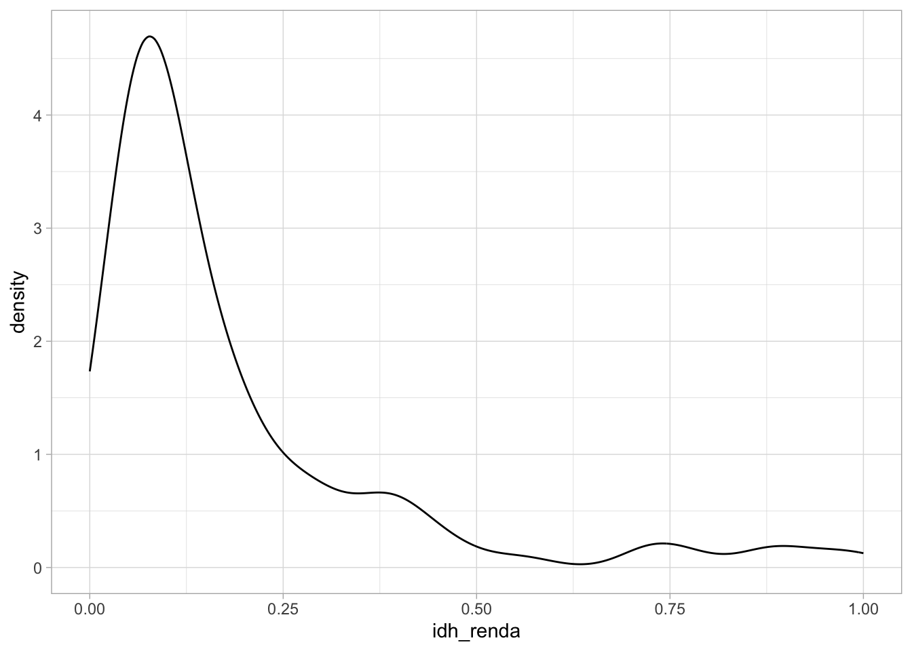
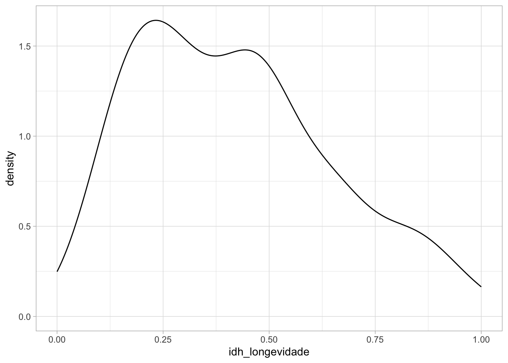
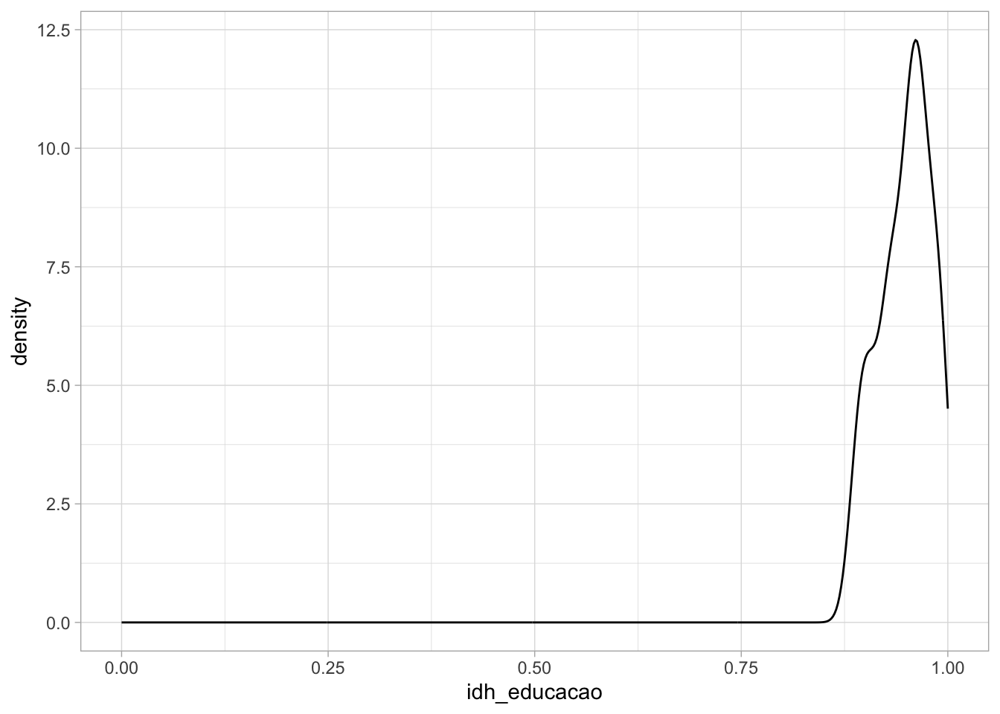
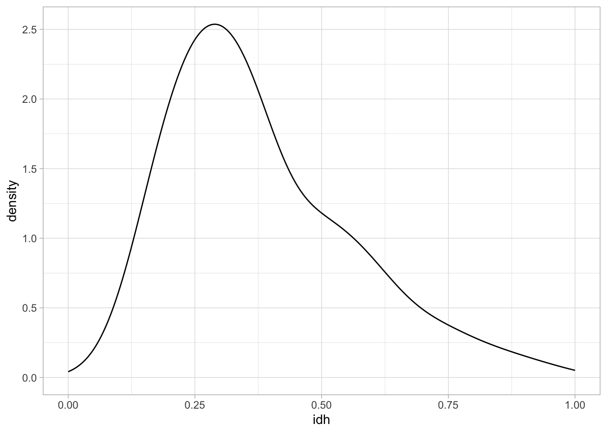
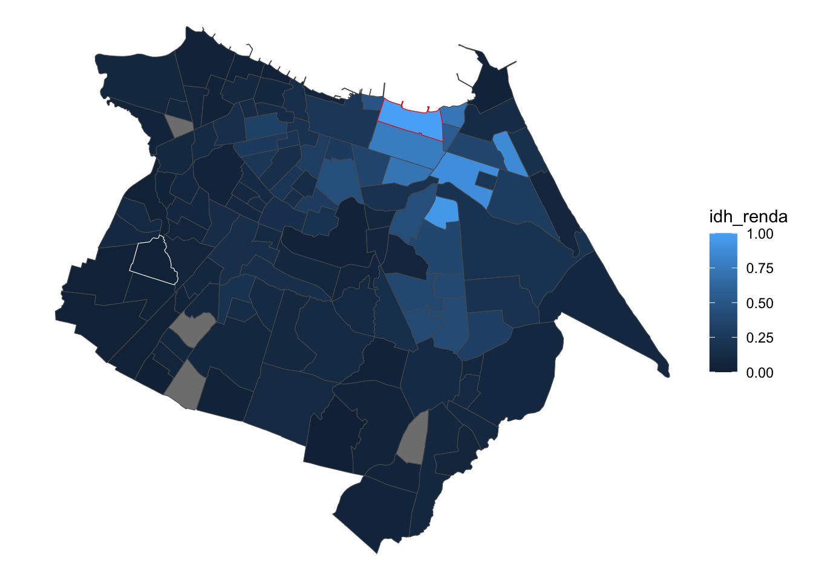
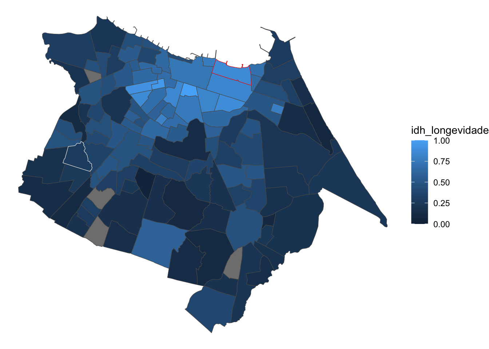
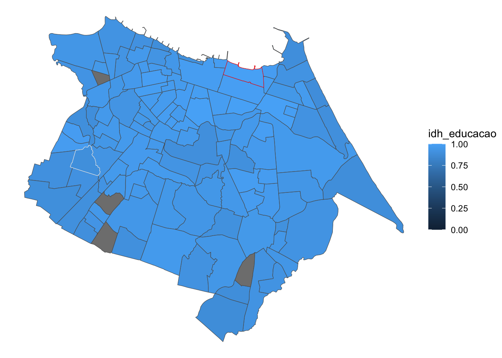
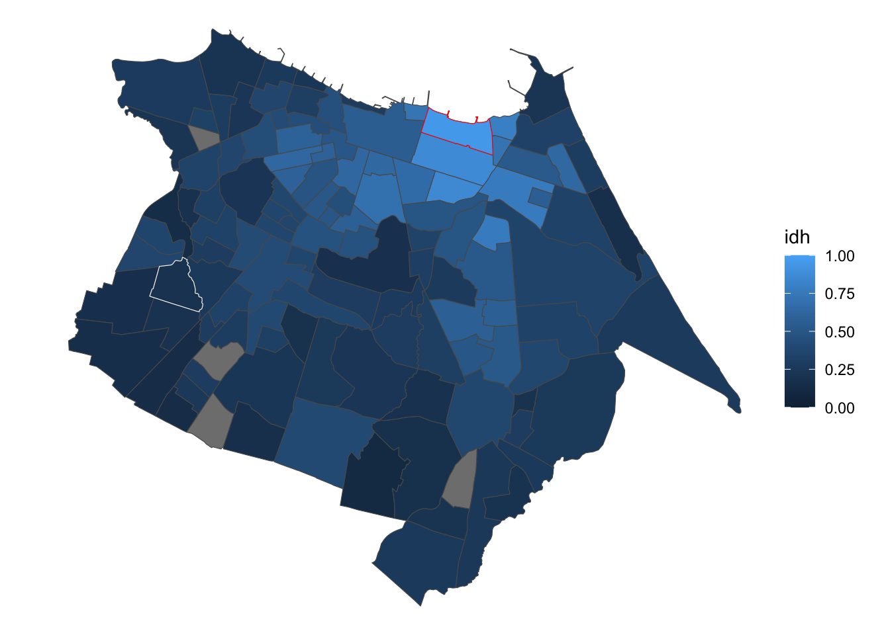

library(readxl)
library(ggplot2)
library(tidyverse)Explorando dados abertos de Fortaleza
Fonte dos dados
Delimitação dos bairros: https://dados.fortaleza.ce.gov.br/dataset/bairros-fortaleza/
IDH por bairros: https://dados.fortaleza.ce.gov.br/dataset/desenvolvimento_humano_bairro
- Dados do Censo 2010.
Importar dados de IDH
idh_for_bruto <-
read_excel(
"indicededesenvolvimentohumano.xlsx",
col_types = c(
"text",
"text",
"numeric",
"numeric",
"numeric",
"numeric",
"text"
)
)
idh_for <- idh_for_bruto |>
janitor::clean_names() |>
tidyr::drop_na(ranking_idh)Importar delimitação dos bairros
arquivo_mapa_compactado <- "bairros.kmz"
arquivo_mapa <- unzip(arquivo_mapa_compactado)
arquivo_mapamapa_bairros_for <- sf::read_sf("doc.kml")Unir!
limpar_nome <- function(x){
nome_limpo <- x |>
stringr::str_to_lower() |>
abjutils::rm_accent() |>
stringr::str_remove_all(pattern = "\\*") |>
stringr::str_squish()
nome_limpo |>
dplyr::case_match(
"amadeu furtado" ~ "amadeo furtado",
"panamericano" ~ "pan americano",
"prefeito jose walter" ~ "prefeito jose valter",
"sapiranga / coite" ~ "sapiranga/coite",
"vila peri" ~ "vila pery",
"engenheiro luciano cavalcante" ~ "luciano cavalcante",
"vicente pinzon" ~ "vincente pinzon",
"tauape" ~ "sao joao do tauape",
"ellery" ~ "vila ellery",
"moura brasil" ~ "arraial moura brasil",
"boa vista/castelao" ~ "boa vista",
.default = nome_limpo
)
}
idh_for_join <- idh_for |>
mutate(nome_bairro_limpo = limpar_nome(bairros))
mapa_bairros_for_join <- mapa_bairros_for |>
mutate(nome_bairro_limpo = limpar_nome(Name))
idh_bairros <- mapa_bairros_for_join |>
dplyr::left_join(idh_for_join)Como está Granja Portugal comparado aos outros bairros?
idh_bairros |>
tidyr::drop_na(idh) |>
dplyr::arrange(desc(idh)) |>
tibble::rowid_to_column() |>
dplyr::filter(rowid == 1 | rowid == dplyr::n() | nome_bairro_limpo == "granja portugal") |>
dplyr::select(
bairros, tidyselect::contains("idh")
) |>
sf::st_drop_geometry() |>
knitr::kable()| bairros | idh_educacao | idh_longevidade | idh_renda | idh | ranking_idh |
|---|---|---|---|---|---|
| Meireles | 1.0000000 | 0.8657331 | 1.0000000 | 0.9530770 | 1º |
| Granja Portugal | 0.8947368 | 0.2751236 | 0.0279450 | 0.1901848 | 103º |
| Conjunto Palmeiras | 0.9149798 | 0.1309720 | 0.0101437 | 0.1067241 | 117º |
Gráficos de densidade
gerar_grafico_densidade <- function(dados, eixo_x){
dados |>
ggplot() +
geom_density(aes(x = {{eixo_x}})) +
theme_light() +
scale_x_continuous(limits = c(0, 1))
}
gerar_grafico_densidade(idh_bairros, idh_renda)
gerar_grafico_densidade(idh_bairros, idh_longevidade)
gerar_grafico_densidade(idh_bairros, idh_educacao)
gerar_grafico_densidade(idh_bairros, idh)
Mapas
granja_portugal <- idh_bairros |>
dplyr::filter(nome_bairro_limpo == "granja portugal")
meireles <- idh_bairros |>
dplyr::filter(nome_bairro_limpo == "meireles")
gerar_mapa_tematico <- function(dados, coluna_preencher){
dados |>
ggplot(aes(fill = {{coluna_preencher}})) +
geom_sf() +
geom_sf(data = granja_portugal, color = "white", size = 3) +
geom_sf(data = meireles, color = "red", size = 3) +
theme_void() +
scale_fill_continuous(limits = c(0, 1))
}
gerar_mapa_tematico(idh_bairros, idh_renda)
gerar_mapa_tematico(idh_bairros, idh_longevidade)
gerar_mapa_tematico(idh_bairros, idh_educacao)
gerar_mapa_tematico(idh_bairros, idh)